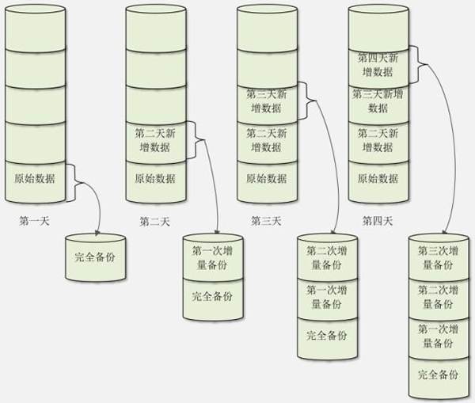
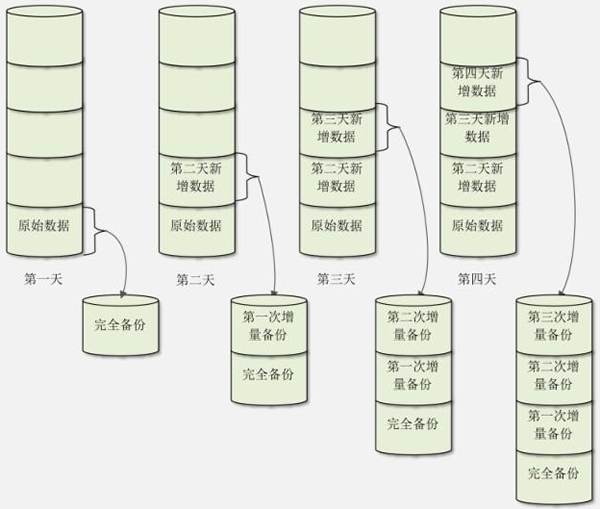

首页 > Linux > Linux备份与恢复
Linux备份策略（完全备份、增量备份和差异备份）详解
常用的备份策略有完全备份和增量备份，而增量备份有可细分为累计增量备份和差异增量备份。下面来分别讲述不同备份策略以及之间的区别。
完全备份的好处是，所有数据都进行了备份，系统中任何数据丢失都能恢复，且恢复效率较高。如果完全备份备份的是整块硬盘，那么甚至不需要数据恢复，只要把备份硬盘安装上，服务器就会恢复正常。
完全备份的缺点也很明显，那就是需要备份的数据量较大，备份时间较长，备份了很多无用数据，占用的空间较大，所以完全备份不可能每天执行。
我们一般会对关键服务器进行整盘完全备份，如果出现问题，则可以很快地使用备份硬盘进行替换，从而减少损失。我们甚至会对关键服务器搭设一台一模一样的服务器，这样只要远程几个命令（或使用 Shell 脚本自动检测，自动进行服务器替换），备份服务器就会接替原本的服务器，使故障响应时间大大缩短。
累计增量备份是指先进行一次完全备份，服务器运行一段时间之后，比较当前系统和完全备份的备份数据之间的差异，只备份有差异的数据。服务器继续运行，再经过一段时间，进行第二次增量备份。在进行第二次增量备份时，当前系统和第一次增量备份的数据进行比较，也是只备份有差异的数据。第三次增量备份是和第二次增量备份的数据进行比较，以此类推。
因此，累计增量备份就是只备份每天增加或者变化的数据，而不备份系统中没有变动的数据。我们画一张示意图，如图 1 所示。

图 1 累计增量备份
假设我们在第一天进行一次完全备份。第二天增量备份时，只会备份第二天和第一天之间的差异数据，但是第二天的总备份数据是完全备份加第一次增量备份的数据。第三天增量备份时，只会备份第三天和第二天之间的差异数据，但是第三天的总备份数据是完全备份加第一次增量备份的数据，再加第二次增量备份的数据。当然，第四天增量备份时，只会备份第四天和第三天的差异数据，但是第四天的总备份数据是完全备份加第一次增量备份的数据，加第二次增量备份的数据，再加第三次增量备份的数据。
采用累计增量备份的好处是，每次备份需要备份的数据较少，耗时较短，占用的空间较小；坏处是数据恢复比较麻烦，如果是图 1 的例子，那么当进行数据恢复时，就要先恢复完全备份的数据，再依次恢复第一次增量备份的数据、第二次增量备份的数据和第三次增量备份的数据，最终才能恢复所有的数据。

图 2 差异增量备份
假设我们在第一天也进行一次完全备份。第二天差异备份时，会备份第二天和第一天之间的差异数据，而第二天的备份数据是完全备份加第一次差异备份的数据。第三天进行差异备份时，仍和第一天的原始数据进行对比，把第二天和第三天所有的数据都备份在第二次差异备份中，第三天的备份数据是完全备份加第二次差异备份的数据。第四天进行差异备份时，仍和第一天的原始数据进行对比，把第二天、第三天和第四天所有的不同数据都备份到第三次差异备份中，第四天的备份数据是完全备份加第三次差异备份的数据。
相比较而言，差异备份既不像完全备份一样把所有数据都进行备份，也不像增量备份在进行数据恢复时那么麻烦，只要先恢复完全备份的数据，再恢复差异备份的数据即可。不过，随着时间的增加，和完全备份相比，变动的数据越来越多，那么差异备份也可能会变得数据量庞大、备份速度缓慢、占用空间较大。
一个比较的备份策略是，对于数据量不大，并且每天数据量增加不多的系统，优先选择完全备份；对于数据量巨大，每天新增数据也很多的系统，视情况选择差异备份或者增量备份。
完全备份
完全备份是指把所有需要备份的数据全部备份。当然，完全备份可以备份整块硬盘、整个分区或某个具体的目录。对于 Linux 操作系统来说，完全备份指的就是将根目录下的所有文件进行备份。完全备份的好处是，所有数据都进行了备份，系统中任何数据丢失都能恢复，且恢复效率较高。如果完全备份备份的是整块硬盘，那么甚至不需要数据恢复，只要把备份硬盘安装上，服务器就会恢复正常。
完全备份的缺点也很明显，那就是需要备份的数据量较大，备份时间较长，备份了很多无用数据，占用的空间较大，所以完全备份不可能每天执行。
我们一般会对关键服务器进行整盘完全备份，如果出现问题，则可以很快地使用备份硬盘进行替换，从而减少损失。我们甚至会对关键服务器搭设一台一模一样的服务器，这样只要远程几个命令（或使用 Shell 脚本自动检测，自动进行服务器替换），备份服务器就会接替原本的服务器，使故障响应时间大大缩短。
累计增量备份
在一个数据量很大的业务应用中，每天对 Linux 系统进行完全备份是不现实的，这就需要用到增量备份策略。累计增量备份是指先进行一次完全备份，服务器运行一段时间之后，比较当前系统和完全备份的备份数据之间的差异，只备份有差异的数据。服务器继续运行，再经过一段时间，进行第二次增量备份。在进行第二次增量备份时，当前系统和第一次增量备份的数据进行比较，也是只备份有差异的数据。第三次增量备份是和第二次增量备份的数据进行比较，以此类推。
因此，累计增量备份就是只备份每天增加或者变化的数据，而不备份系统中没有变动的数据。我们画一张示意图，如图 1 所示。

图 1 累计增量备份
假设我们在第一天进行一次完全备份。第二天增量备份时，只会备份第二天和第一天之间的差异数据，但是第二天的总备份数据是完全备份加第一次增量备份的数据。第三天增量备份时，只会备份第三天和第二天之间的差异数据，但是第三天的总备份数据是完全备份加第一次增量备份的数据，再加第二次增量备份的数据。当然，第四天增量备份时，只会备份第四天和第三天的差异数据，但是第四天的总备份数据是完全备份加第一次增量备份的数据，加第二次增量备份的数据，再加第三次增量备份的数据。
采用累计增量备份的好处是，每次备份需要备份的数据较少，耗时较短，占用的空间较小；坏处是数据恢复比较麻烦，如果是图 1 的例子，那么当进行数据恢复时，就要先恢复完全备份的数据，再依次恢复第一次增量备份的数据、第二次增量备份的数据和第三次增量备份的数据，最终才能恢复所有的数据。
差异增量备份
差异增量备份（后续简称差异备份）也要先进行一次完全备份，但是和累计增量备份不同的是，每次差异备份都备份和原始的完全备份不同的数据。也就是说，差异备份每次备份的参照物都是原始的完全备份，而不是上一次的差异备份。我们也画一张示意图，如图 2 所示。图 2 差异增量备份
假设我们在第一天也进行一次完全备份。第二天差异备份时，会备份第二天和第一天之间的差异数据，而第二天的备份数据是完全备份加第一次差异备份的数据。第三天进行差异备份时，仍和第一天的原始数据进行对比，把第二天和第三天所有的数据都备份在第二次差异备份中，第三天的备份数据是完全备份加第二次差异备份的数据。第四天进行差异备份时，仍和第一天的原始数据进行对比，把第二天、第三天和第四天所有的不同数据都备份到第三次差异备份中，第四天的备份数据是完全备份加第三次差异备份的数据。
相比较而言，差异备份既不像完全备份一样把所有数据都进行备份，也不像增量备份在进行数据恢复时那么麻烦，只要先恢复完全备份的数据，再恢复差异备份的数据即可。不过，随着时间的增加，和完全备份相比，变动的数据越来越多，那么差异备份也可能会变得数据量庞大、备份速度缓慢、占用空间较大。
一个比较的备份策略是，对于数据量不大，并且每天数据量增加不多的系统，优先选择完全备份；对于数据量巨大，每天新增数据也很多的系统，视情况选择差异备份或者增量备份。
关注公众号「站长严长生」，在手机上阅读所有教程，随时随地都能学习。内含一款搜索神器，免费下载全网书籍和视频。

微信扫码关注公众号